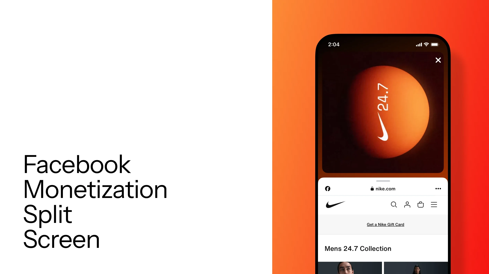
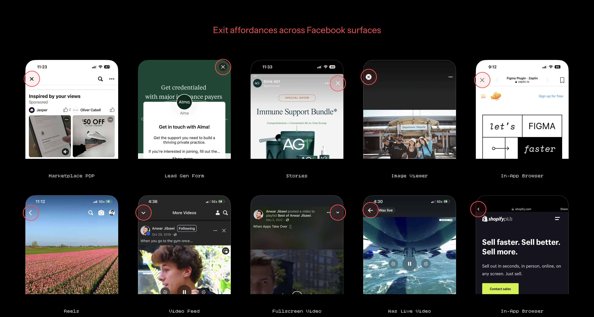
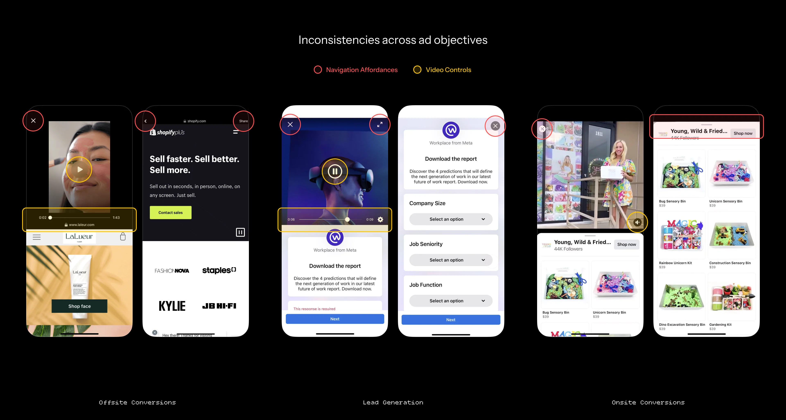
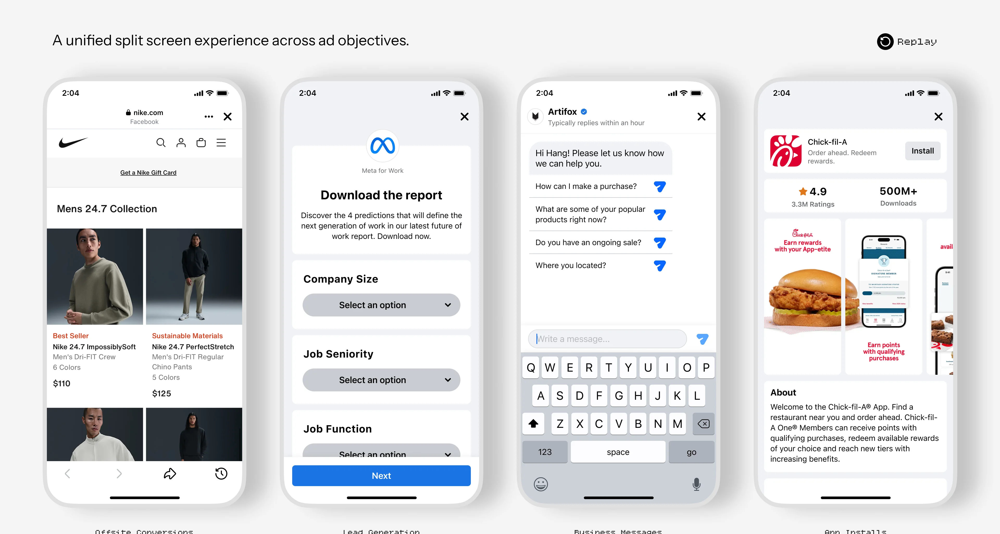
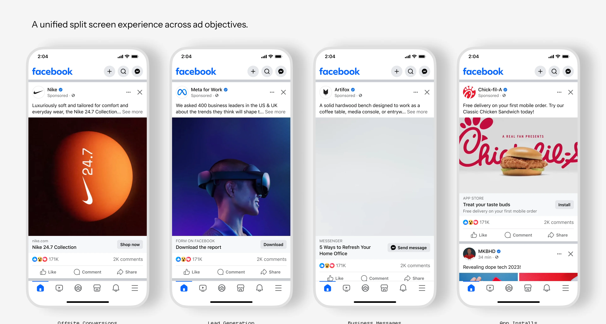
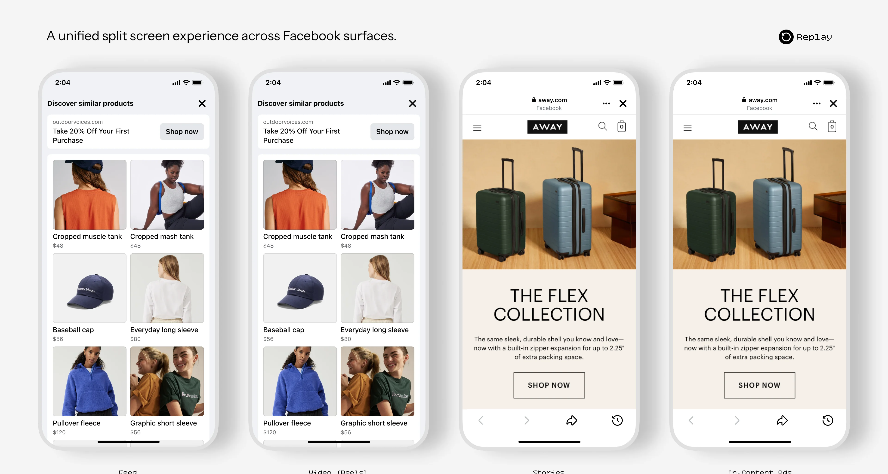

Case Study · Facebook · FMSS
Facebook Monetization Split Screen
Building a shared interaction model for Facebook’s ad experiences.

01 — Context
A design framework for every ad that opens in split screen
FMSS is a design framework I created in 2023 to bring consistency to user experiences across Facebook ad products.
I championed the vision across multiple Meta organizations, driving adoption across the app and establishing FMSS as a canonical framework for Facebook Design. Its interaction patterns went on to influence broader industry approaches to ad engagement.
Watch & Browse
Split Screen is a monetization feature that lets people continue watching a video while previewing an advertiser’s website after clicking an ad in Facebook Feed. In the example below, the advertiser selected Offsite Conversions as the ad objective.

02 — Research & insights
Navigation people couldn’t explain
When asked how Facebook app’s navigation works, a participant in research drew this.
The problem
Years of localized optimizations, coupled with product and feature additions, have led to a cluttered Facebook interface with inconsistent, unpredictable navigation.
Across surfaces, the way out of an experience changed from one screen to the next: close buttons, back chevrons, and down chevrons, each in a different place.

Fragmentation
More objectives, more versions
As advertiser demand grew, Facebook expanded to support more ad objectives.
Monetization teams independently implemented their own versions to meet their needs, without considering how the split screen interaction should work across ad experiences. This led to inconsistent navigation and post-click behaviors.
Over time, these differences fragmented users’ ad journey, making it harder for people to know what to expect.

Key insights
- Different objectives, same taskAds served a range of objectives, including Onsite and Offsite Conversions, Lead Generation, Business Messages, and App Installs, but shared the same underlying task: moving people from discovery to engagement.
- Silos made change expensiveInconsistencies persisted as product teams iterated in silos, making cross product changes costly and repetitive.
03 — Opportunity
How might we create more consistent experiences that build trust and enable people to engage with Facebook more confidently?
- A shared interaction modelEstablish a shared interaction model to create familiarity and reinforce a consistent user mental model across ad experiences.
- Reusable infrastructureBuild reusable infrastructure to enable system-level updates, reduce maintenance costs, and accelerate new monetization opportunities.
04 — Solution
FMSS: one model across objectives and surfaces
A design framework that establishes a consistent interaction model across ad objectives and Facebook surfaces.



05 — System & scale
From a fix to an architecture
The unification effort went beyond fixing a fragmented user experience. It reshaped how video ad post clicks were architected by establishing a layered system that separated shared infrastructure from experience specific logic.
- Gesture Configurations
- BtmSheet Container Anchors
- Overall Stateful UI Adjustments: Drag Handle, Dismiss Btn, etc.
- Common UI Elements & Layouts
- Top View Lifecycle Management
- BtmSheet Lifecycle Management
- BtmSheet State Handling, Transition & Logging
- Top View: Video, Image, Text, H-Scroll, etc.
- BtmSheet: IAB, LG, CTM, MAI, Product Catalog, etc.
This scalable foundation enabled faster iteration and system-level improvements, while creating a path for future growth. With the system in place, we brought ad split screen experiences to Facebook on iPad for the first time.


06 — Validation & adoption
Alignment, formalization, and proof
I brought the framework to product and design leaders across Facebook for alignment on its principles, application criteria, and scope.
With leadership support in place, I partnered with Blueprint, Facebook’s Design Systems team, to formalize FMSS in the design library through reusable components, usage guidance, and shared resources. This made FMSS accessible to design teams across Meta and established the foundation for broader adoption.
A framework only creates value when teams can adopt it and drive meaningful results.
Because ad experiences spanned multiple organizations beyond Facebook Monetization (Browser Ecosystem, App & Gaming, Business Messaging, and more), I galvanized teams around a unified vision through design advocacy, strategic reviews, and cross-functional collaboration.
Through a series of cross-org experiments, we validated the framework across existing use cases, demonstrating its ability to improve user experience and business outcomes.
07 — Evolution
New experiences, same foundation
FMSS continues to evolve, enabling new monetization opportunities across Facebook. Here are a few key projects powered by FMSS.
Caption & Browse
A Reels ad expands its caption, then the advertiser’s site rises as a bottom sheet and opens to full height.


H-Scroll Split Screen
A carousel ad opens into split screen: each item in the carousel updates the site below, until the browser expands to full height.

01

02

03

04

05

06
Profile & Browse
The same model extended to a Reels-style ad and its advertiser profile.


08 — Results
The results
Incremental Revenue generated for Meta in 2025 through feature, surface, and platform expansion enabled by FMSS.
Engineering Years Saved for Facebook through reduced operational costs in product development, testing, and SEV response, enabled by FMSS.